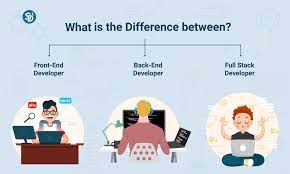

Webdevelopment
 Webdevelopment is the work
involved in developing a Web site for the Internet (World Wide Web) or an intranet (a private network)
. Web development can range from developing
a simple single static page of plain text to
complex web applications, electronic businesses, and
social network services. A more comprehensive
list of tasks to which Web development commonly refers,
may include Web engineering, Web design, Web content development,
client liaison, client-side/server-side scripting, Web server
and network security configuration, and e-commerce development.
Webdevelopment is the work
involved in developing a Web site for the Internet (World Wide Web) or an intranet (a private network)
. Web development can range from developing
a simple single static page of plain text to
complex web applications, electronic businesses, and
social network services. A more comprehensive
list of tasks to which Web development commonly refers,
may include Web engineering, Web design, Web content development,
client liaison, client-side/server-side scripting, Web server
and network security configuration, and e-commerce development.
Among Web professionals, "Web development" usually refers to the main non-design aspects of building Web sites: writing markup and coding. Web development may use content management systems (CMS) to make content changes easier and available with basic technical skills.
For larger organizations and businesses, Web development teams can consist of hundreds of people (Web developers) and follow standard methods like Agile methodologies while developing Web sites. Smaller organizations may only require a single permanent or contracting developer, or secondary assignment to related job positions such as a graphic designer or information systems technician. Web development may be a collaborative effort between departments rather than the domain of a designated department.There are three kinds of Web developer specialization: front-end developer, back-end developer, and full-stack developer. Front-end developers are responsible for behavior and visuals that run in the user browser, while back-end developers deal with the servers.
FRONT END - “Front End” typically refers to what you actually see on the website in the browser (and is often called “client-side”). This means that front end developers are responsible for everything that you see when you’re navigating around the Internet, from fonts and colors to dropdown menus and sliders.
Skills needed: JavaScript, HTML, CSS, JQuery, HTML5, CSS3, Ajax, UI (User interface), UX (user experience), JavaScript Frameworks such as Angular-s, Angular.js, ReactJS, vue.js, Ember.js and Meteor.js.
BACK END - While the front end is everything the user interacts with directly, “Back End” typically refers to the guts of the application which live on the server (and is often called “server-side”). The back end of a website consists of a server, an application, and a database. Back end developers generally work with front end developers to make their code work within the site’s design (or to tweak that design when necessary) and user interface.
Skills needed: JavaScript, HTML, CSS, JQuery, SQL, Java, Linux, Python, Ruby, PHP.
FULL STACK - Full Stack web development is a combination of both the front-end and back-end. “Stack,” means layer in this case. A full-stack web developer has expertise in all layers of a website’s development. This includes, but not limited to: the server, client and hosting, a form of data structuring or modeling, user interface and experience, as well as the needs of the actual business.